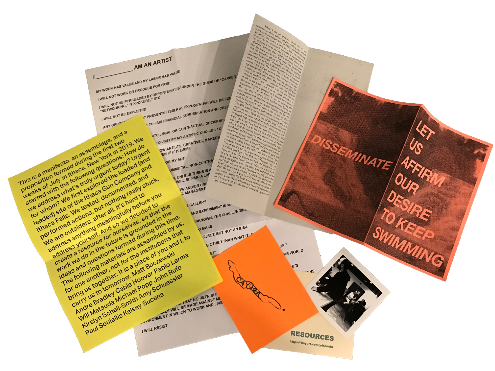
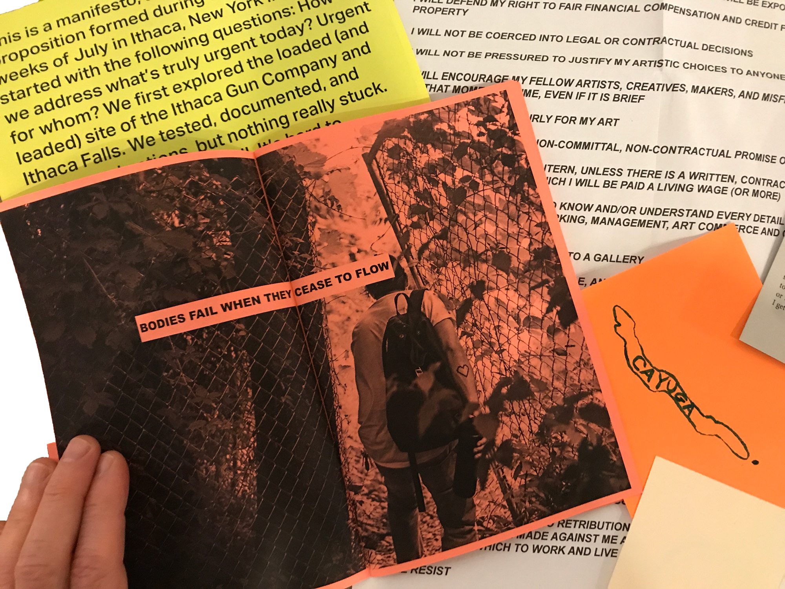
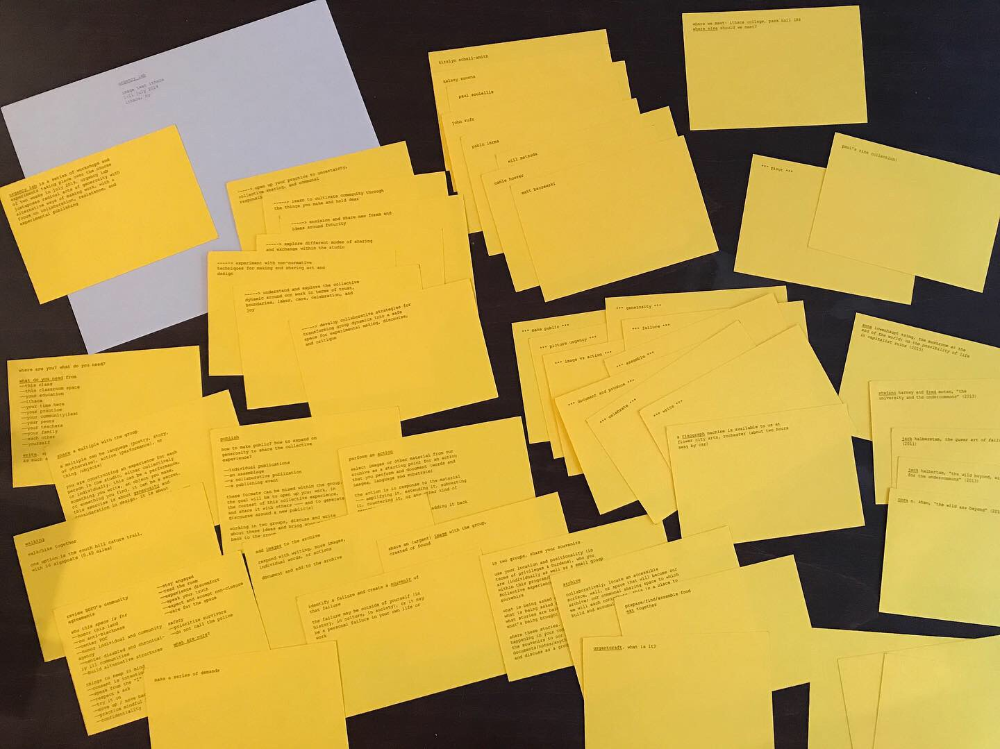
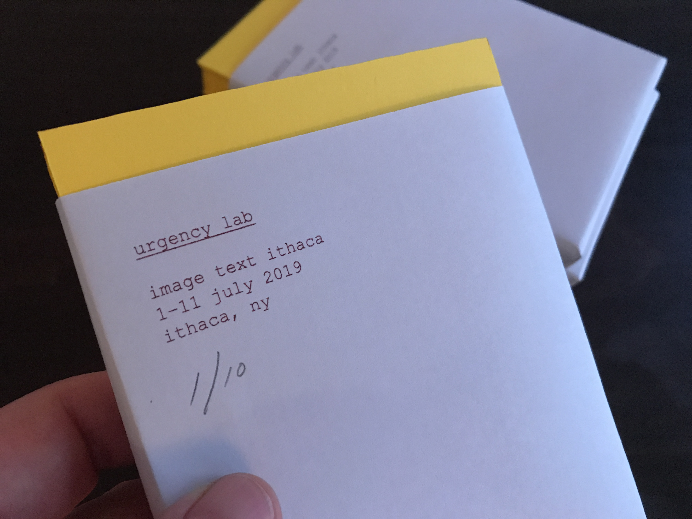
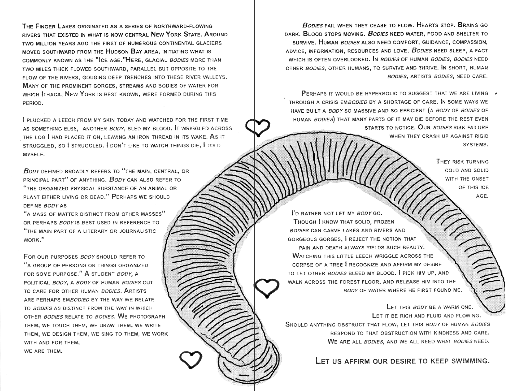
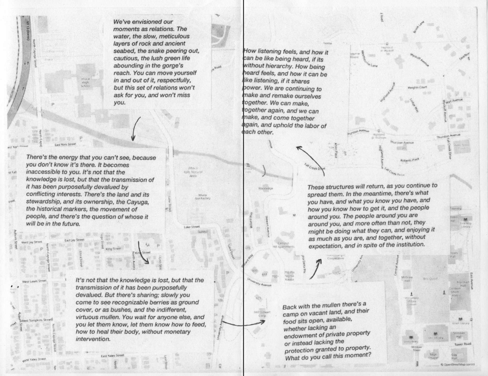
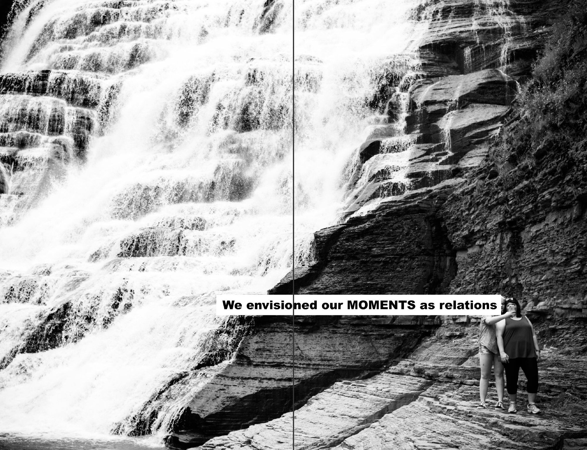
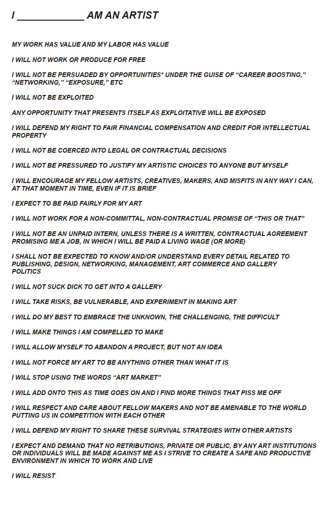

Let us affirm our desire to keep swimming. (2019)

LET US AFFIRM OUR DESIRE TO KEEP SWIMMING
LET US AFFIRM OUR DESIRE TO KEEP SWIMMING is a collaborative publication authored and produced by the students of Urgency Lab Ithaca, a 2-week course that I taught at Image Text Ithaca in July 2019. The zine is an assemblage of printed materials containing dreams, demands, and agreements that evolved during the class, over the course of eight 3.5-hour sessions. The students produced an edition of 45 that was distributed on July 11 during a performative reading at Ithaca College.

Zine assemblage 5.5 in. x 9 in.
Laser prints with inserts and clips
Edition of 45
Ithaca, NY
July 2019

Contributors: Matt Baczewski, Andre Bradley, Cable Hoover, Pablo Lerma, Will Matsuda, Michael Popp, John Rufo, Kirslyn Schell-Smith, Amy Schuessler, Paul Soulellis, Kelsey Sucena
 
The class began with the distribution of a non-linear syllabus. Each student received a deck of 51 cards, in an edition of 10, that I risograph printed in Pawtucket, RI. The cards contained prompts, concept words, readings, and other provocations that were shuffled and rearranged and rewritten by the students, with my guidance. The class evolved out of these early discussions about how to spend our time, leading to collective agreements and activities that emerged organically from the group.





letusaffirmourdesiretokeepswimming.com